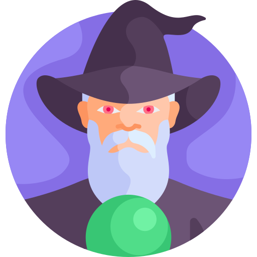

<ion-header>
  <ion-toolbar>
    <ion-title>โปรไฟล์</ion-title>
    <ion-buttons slot="start">
      <ion-menu-button></ion-menu-button>
    </ion-buttons>
  </ion-toolbar>
</ion-header>
<ion-content>
  <ion-avatar>
    
  </ion-avatar>
  <div style="display: flex; flex-direction: row;justify-content: center;align-items: center;">
    <h5>{{this.name}}</h5>
    <ion-icon name="checkmark-circle" style="margin-top: 6px;color: #7732FF;margin-left: 5px;"></ion-icon>
  </div>
  <ion-list class="ion-no-margin">
    <ion-item>
      <ion-label position="floating">ชื่อ</ion-label>
      <ion-input [(ngModel)]="this.nickname"></ion-input>
    </ion-item>
    <ion-item>
      <ion-label position="floating">เพศ</ion-label>
      <ion-input [(ngModel)]="this.gender"></ion-input>
    </ion-item>
    <ion-item>
      <ion-label position="floating">อายุ</ion-label>
      <ion-input [(ngModel)]="this.age"></ion-input>
    </ion-item>
    <ion-item>
      <ion-label position="floating">น้ำหนัก</ion-label>
      <ion-input [(ngModel)]="this.weight"></ion-input>
    </ion-item>
    <ion-item>
      <ion-label position="floating">ส่วนสูง</ion-label>
      <ion-input [(ngModel)]="this.height"></ion-input>
    </ion-item>
  </ion-list>
  <section style="margin-top: 20px;margin-bottom: 30px;">
    <ion-button expand="block" (click)="editProfile()">บันทึกข้อมูล</ion-button>
  </section>
</ion-content>
